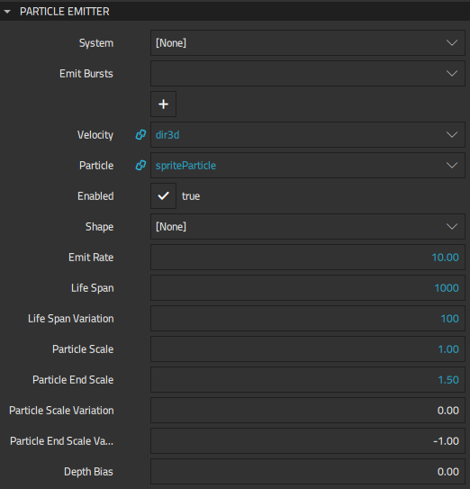
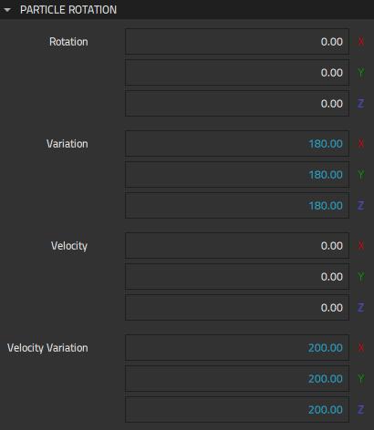
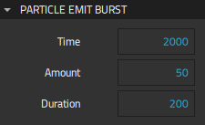
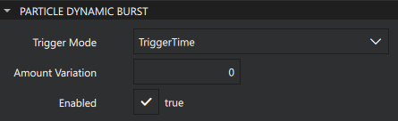
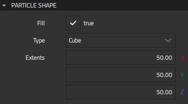
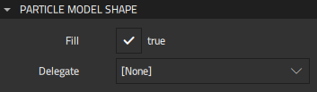

Particle Emitters
The Particle Emitter component emits logical particles into the system. You can determine how individual particles will look like and how they are emitted. Many of the properties have variation counterparts, such as Color variation, for adding variation to the particles.
The Trail Emitter component emits particles from the location of other logicial particles. Any logical particle of the followed component within the bounds of a trail emitter will cause particle emission from its location, as if there were an emitter on it with the same properties as the trail emitter.
Emitter components can use instances of the Particle Shape or Model Shape component to emit particles from the surface of the selected shape.
You always need one emitter. If the Particle System component instance is the direct parent of the emitter component instance, you don't need to specify the particle system separately. However, you always need to select the logical particle to emit, or nothing is emitted.
The following components are available for emitting particles:
Emitter
Specify properties for particle emitters in Properties > Particle Emitter. You need at least one emitter.

Emitter emits logical particles that you select in Particle, as defined by the other properties. If the Particle System component instance is not the direct parent of the emitter component instance, you need to select it in System.
You can control the amount of particles emitted per second by setting the value of Emit rate or add Emit Burst component instances in Emit bursts to emit bursts of specified amounts of particles at the specified point in time for the specified duration.
In Velocity, set a starting velocity for emitted particles. If velocity is not set, particles start motionless, and velocity is determined by particle affectors.
Use Enabled to turn an emitter on or off. Usually, this property is used in code to conditionally turn emitters on and off. To continue emitting bursts, set Emit rate to 0 instead of disabling Enabled.
In Shape, select the instance of the Particle Shape or Model Shape component to use. The shape is scaled, positioned, and rotated based on the emitter node properties. When the shape Fill property is set to false, particles are emitted only from the surface of the shape. When the shape is defined, it is visualized in the 3D view. When the shape is not defined, particles are emitted from the center point of the emitter.
In Life span, specify the lifespan of a single particle in milliseconds. Specify variation in the particle lifespan in Life span variation. For example, to emit particles that will exist from three to four seconds, set Life span to 3500 ms and Life span variation to 500 ms.
Particle scale and Particle end scale specify the scale multiplier of the particles at the beginning and end. For variation in particle size, specify values for Particle scale variation and Particle end scale variation.
Depth bias specifies the depth bias of the emitter. Depth bias is added to the object's distance from camera when sorting objects. This can be used to force the rendering order of objects that are located close to each other if it might otherwise change between frames. Negative values cause the sorting value to move closer to the camera while positive values move it further from the camera.
Trail Emitter
Specify additional properties for particle trail emitters in Properties > Particle Trail Emitter.
Select the logical particle component to follow in Follow.
Particle Rotation
Specify properties for the rotation of particles in Properties > Particle Rotation

Rotation specifies the rotation of the particles in the beginning. Rotation is defined as degrees in euler angles. For variation in rotation, specify values for Variation.
Velocity specifies the rotation velocity of the particles in the beginning. Rotation velocity is defined as degrees per second in euler angles. For variation in velocity, specify values in Velocity variation.
Emit Burst
Specify properties for emit bursts in Properties > Emit Burst.

Time specifies the time in milliseconds when emitting the burst starts, and Amount specifies the amount of particles emitted during the time specified in milliseconds in Duration.
For example, you could use two Emit Burst instances to emit 100 particles at the beginning and 50 particles at 2 seconds, so that both bursts take 200 milliseconds. For one instance, set Time to 0, Amount to 100, and Duration to 200. For the other instance, set Time to 2000, Amount to 50, and Duration to 200.
Dynamic Burst
Specify properties for emit bursts in Properties > Dynamic Burst.

Trigger Mode defines when the burst is triggered:
- Select TriggerTime to emit the burst when the burst time is due.
- Select TriggerStart to emit the burst when the followed particle is emitted.
Note: This mode only works with trail emitters.
Note: In this mode, Time and Duration don't have an effect.
- Select TriggerEnd to emit the burst when the followed particle life span ends.
Amount Variation defines the random variation in the number of emitted particles.
Particle Shape
The Particle Shape component supports shapes, such as cube, sphere, and cylinder, for emitting particles from their area.
Specify properties for particle shape in Properties > Particle Shape.

In Type, select the shape to use.
Select Fill to fill the shape instead of just displaying its outline.
Extents determines the extent coordinates of the shape geometry.
Model Shape
The Model Shape component specifies a template for defining the model.
Specify properties for model shape in Properties > Particle Model Shape.

In Delegate, select the 3D Model component that defines each object instantiated by the particle.
Select Fill to fill the shape instead of just displaying its outline.